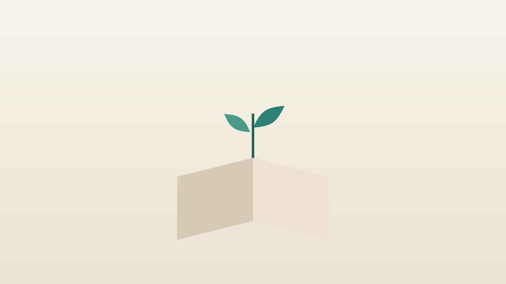

건강 칼럼 · 인천 수험생 한의원
공부할수록 지치고 집중이 안 된다면, 수험생 체력·집중력 관리

나의 공부 체력, 이런 상태인가요?
- 아침에 알람을 여러 번 끄고도 일어나기 힘들다
- 수업 시간이나 점심 뒤에 졸음을 참기 어렵다
- 같은 문단을 몇 번 읽어도 내용이 들어오지 않는다
- 커피나 에너지음료 없이는 오후를 버티기 힘들다
- 목과 어깨가 늘 뻐근하고 두통이 잦다
- 입맛이 없거나, 반대로 단 것만 당긴다
이 체크리스트는 진단 도구가 아니라 상담이 필요한지 가늠해 보는 참고용입니다.
수험생은 왜 이렇게 지칠까요?
미국수면학회(AASM)는 13~18세 청소년에게 하루 8~10시간의 수면을 권합니다. 그런데 수험생은 늦게까지 공부하고 아침 일찍 등교하느라 이보다 훨씬 적게 자는 경우가 많습니다. 낮에 익힌 내용은 자는 동안 정리되고 굳어지기 때문에, 잠을 깎아 공부 시간을 늘리면 오히려 머리에 남는 것이 줄고 다음 날 낮 졸음과 실수가 늘어납니다. 청소년은 생체 시계가 원래 늦게 자고 늦게 일어나는 쪽으로 밀려 있어 의지만으로 버티기 어렵다는 점도 기억해 주세요.
졸음을 쫓으려 마시는 카페인도 살펴야 합니다. 식품의약품안전처는 어린이·청소년의 카페인 섭취를 하루 체중 1kg당 2.5mg 이하로 권고하는데, 체중 50kg이면 125mg 정도라 커피 한 잔에 에너지음료 한 캔만 더해도 쉽게 넘길 수 있습니다. 카페인은 마신 뒤 몇 시간 동안 몸에 남아 밤잠을 얕게 만들고, 그래서 다음 날 다시 카페인을 찾게 되는 악순환이 생깁니다. 가슴 두근거림, 손 떨림, 속 쓰림이 있다면 줄여야 한다는 신호입니다.
피로 뒤에 다른 원인이 있는지 먼저 확인할 신호
- 쉬어도 나아지지 않는 피로가 한 달 넘게 이어진다
- 얼굴이 창백하고 계단을 오를 때 숨이 차거나 어지럽다 (빈혈 확인, 특히 생리량이 많은 여학생)
- 이유 없이 체중이 줄거나 늘고, 더위나 추위를 유난히 탄다 (갑상선 확인)
- 열, 목 림프절 부기, 인후통이 오래간다
- 코를 심하게 골고 자도 개운하지 않다 (수면무호흡 확인)
- 모든 일에 흥미가 사라지고 '없어지고 싶다'는 생각이 든다
피로가 혈액검사로 확인할 수 있는 원인 때문일 수 있어 소아청소년과나 내과 검사를 먼저 받으세요. 우울감이 2주 넘게 이어지거나 스스로를 해치고 싶은 생각이 든다면 혼자 견디지 말고 정신건강의학과 진료를 받거나 자살예방 상담전화 109에 연락하세요.
한의학은 수험생의 피로를 어떻게 보나요?
한의학에서는 몸과 마음을 무리하게 써서 생긴 피로를 노권(勞倦)이라 불렀습니다. 오래 앉아 생각을 많이 하면 소화를 맡은 비(脾)가 지치고, 비가 지치면 먹은 것이 기운으로 바뀌지 못해 몸이 무겁고 졸음이 쏟아진다고 보았습니다. 밥만 먹으면 유난히 늘어지는 수험생이 이런 경우입니다.
늦게까지 깨어 눈과 머리를 쓰면 몸을 식히고 적셔 주는 진액, 곧 음(陰)이 마른다고 보았습니다. 이때는 오후에 얼굴이 달아오르고 입이 마르며 눈이 뻑뻑해집니다. 또 단 음식과 야식이 쌓여 생긴 담습(痰濕)은 머리로 오르는 맑은 기운을 가로막아 머리를 멍하고 무겁게 만든다고 설명했습니다. 같은 피로라도 어디에서 비롯됐는지에 따라 처방의 방향이 달라집니다.
나는 어떤 유형일까?
1. 비기허(脾氣虛) 밥 먹으면 졸음이 쏟아지는 유형
- 이런 분에게 많아요
- 끼니를 대충 때우고 운동할 틈이 없는 학생
- 나타나는 모습
- 식사 뒤 졸음이 몰려오고 오후 내내 늘어진다
- 함께 오는 몸의 신호
- 입맛 없음, 묽은 변, 말하기도 귀찮음
- 진찰에서 보이는 모습
- 혀가 담백하고 이빨 자국, 맥이 약함
- 치료 방향
- 기운을 끌어올리고 소화를 돕는 방향 (보중익기탕·향사육군자탕 계열)
- 오늘부터 해 볼 것
- 점심은 덜 기름지게, 평소 양의 80% 정도만 드세요.
2. 기음양허(氣陰兩虛) 진이 빠지고 입이 마르는 유형
- 이런 분에게 많아요
- 밤늦게까지 공부하고 땀을 많이 흘리는 학생
- 나타나는 모습
- 오후가 되면 얼굴이 달아오르고 기운이 뚝 떨어진다
- 함께 오는 몸의 신호
- 입 마름, 식은땀, 눈 뻑뻑함, 손발 화끈거림
- 진찰에서 보이는 모습
- 혀가 붉고 설태가 적으며 맥이 가늚
- 치료 방향
- 진액과 기운을 함께 채우는 방향 (생맥산 계열)
- 오늘부터 해 볼 것
- 물병을 책상에 두고 한 시간에 한 번씩 마시세요.
3. 담습(痰濕) 머리가 멍하고 무거운 유형
- 이런 분에게 많아요
- 야식과 단 음료를 즐기는 학생
- 나타나는 모습
- 머리가 띵하고 아침마다 몸이 천근만근이다
- 함께 오는 몸의 신호
- 어지럼, 속 메스꺼움, 가래, 체중 증가
- 진찰에서 보이는 모습
- 설태가 두껍고 끈적하며 맥이 미끄러움
- 치료 방향
- 쌓인 습담을 걷어 머리를 맑게 하는 방향 (반하백출천마탕 계열)
- 오늘부터 해 볼 것
- 밤 10시 이후 야식과 단 음료를 끊어 보세요.
4. 간혈허(肝血虛) 눈과 목이 먼저 지치는 유형
- 이런 분에게 많아요
- 화면과 책을 오래 보는 학생, 생리가 시작된 여학생
- 나타나는 모습
- 눈이 침침하고 목·어깨가 뻣뻣하며 손발이 저리다
- 함께 오는 몸의 신호
- 어지럼, 잘 갈라지는 손톱, 생리량 변화
- 진찰에서 보이는 모습
- 혀가 창백하고 맥이 가늚
- 치료 방향
- 혈을 보충해 눈과 근육의 피로를 돕는 방향 (사물탕 계열)
- 오늘부터 해 볼 것
- 50분마다 먼 곳을 20초 바라보고 목을 천천히 돌려 주세요.
한의원에서는 어떻게 진찰하나요?
- 하루 시간표: 기상·취침 시각, 학원 일정, 공부 시간, 낮잠을 함께 정리합니다.
- 카페인·식사 기록: 커피, 에너지음료, 탄산음료를 하루에 얼마나 마시는지, 끼니를 거르는지 확인합니다.
- 검사 결과: 빈혈, 갑상선, 간 기능 같은 최근 혈액검사 결과가 있으면 함께 봅니다.
- 진찰: 설진, 맥진, 복진과 함께 목·어깨 근육의 뭉침을 살핍니다.
침·약침·한약 치료는 어떻게 하나요?
1. 침 치료
청소년은 가는 침으로 짧게 진행하며, 바늘이 부담스러운 학생에게는 피부에 붙이는 스티커침을 씁니다. 학원 일정 사이에 받고 갈 수 있도록 시간을 맞춥니다.
- 백회(百會): 정수리 한가운데로, 두 귀의 끝을 머리 위로 이었을 때 만나는 점. 머리를 맑게 하는 데 씁니다.
- 풍지(風池): 뒤통수 아래, 목 뒤 굵은 근육 바깥쪽의 오목한 곳. 목 뻣뻣함과 눈 피로를 덜어 줍니다.
- 태양(太陽): 눈썹 끝과 눈꼬리 사이에서 뒤로 손가락 한 마디쯤 들어간 오목한 곳. 눈의 피로와 두통에 씁니다.
- 족삼리(足三里): 무릎뼈 아래 바깥쪽 오목한 곳에서 손가락 네 개 아래. 소화와 기운을 북돋습니다.
- 태충(太衝): 발등에서 엄지와 둘째 발가락 뼈가 만나기 직전의 오목한 곳. 쌓인 긴장을 풀어 줍니다.
2. 약침
약침은 어린이에게는 사용하지 않습니다. 고등학생 이상에서 목과 어깨 뭉침이 심해 두통으로 이어질 때는 진찰 후 필요한 경우에 한해 약침을 고려하며, 오래 앉아 틀어진 자세로 불편하다면 진찰 후 추나 요법도 시행합니다.
3. 한약
유형에 맞춘 탕약으로 처방하며, 학생이 먹기 편하도록 쓴맛이 덜한 약재를 중심으로 짓고 필요하면 단것을 조금 타서 마셔도 됩니다. 흔히 '총명탕'처럼 머리가 좋아진다는 이름의 처방을 찾으시는데, 옛 의서에 건망(健忘)을 다스리는 처방으로 실려 있기는 하지만 이름처럼 기억력이나 성적을 올려 준다고 단정할 근거는 없습니다. 처방은 이름이 아니라 학생의 몸 상태를 보고 정하며, ADHD 약, 비염약, 여드름약처럼 복용 중인 약이 있다면 알려 주시면 확인해 처방합니다.
원장님이 네이버 블로그에 진료 이야기와 건강 정보를 꾸준히 올리고 있습니다. 더 많은 이야기는 블로그에서 확인해 보세요.
블로그 보기관리는 어떤 순서로 진행되나요?
- 첫 진료 검사가 먼저 필요한 피로인지 가리고, 수면 시간과 카페인 양을 함께 점검합니다.
- 1~2주 취침·기상 시각을 고정하고 침 치료와 탕약으로 피로와 몸의 긴장을 먼저 다룹니다.
- 3~6주 아침 기상, 낮 졸음, 한 번에 집중하는 시간을 처음과 비교합니다.
- 시험 전 한 달 새 처방을 시작하기보다 잘 맞았던 관리를 이어 가고, 생활 리듬을 시험 시간표에 맞춥니다.
체력 관리는 시험이 코앞일 때보다 여유가 있을 때 시작해야 몸이 따라올 시간이 있습니다. 시험장에서 긴장이 특히 심하다면 시험불안 관리를 함께 상담할 수 있습니다.
공부 체력을 지키는 생활 습관
- 잠이 먼저: 주말에도 기상 시각이 평일과 2시간 넘게 벌어지지 않게 하고, 모자란 잠은 오후 3시 전 20분 이내 낮잠으로 채웁니다.
- 카페인 규칙: 카페인은 오후 2시 이후 피하고, 에너지음료는 '고카페인 함유' 표시를 확인해 되도록 마시지 않습니다.
- 아침 식사: 달걀, 두유, 바나나처럼 간단해도 단백질이 든 아침을 먹으면 오전이 덜 흔들립니다.
- 몸 움직이기: 하루 20~30분 걷기나 줄넘기, 스트레칭은 공부 시간을 뺏는 것이 아니라 머리를 식혀 줍니다.
- 화면 정리: 잠들기 30분 전에는 휴대폰을 책상 밖에 두고, 침대는 잠잘 때만 씁니다.
다른 진료가 함께 필요한 경우
- 빈혈이 확인되면 철분 보충 같은 의학적 치료를 먼저 받으세요.
- 주의력 문제가 어릴 때부터 이어졌다면 ADHD 평가를 받아 보세요. 증상이 가벼우면 한약 치료를 중심으로 관리하기도 하지만, 깊다면 소아청소년 정신건강의학과 치료를 함께 받으세요.
- 우울감과 무기력이 2주 넘게 이어지면 정신건강의학과 상담을 받으세요.
- 코골이와 낮 졸음이 심하면 수면다원검사를 고려하세요.
자주 묻는 질문 Q&A
- Q1. 총명탕을 먹으면 머리가 좋아지나요?
- 총명탕은 옛 의서에 건망을 다스리는 처방으로 소개되어 있지만, 성적이나 지능을 높인다고 단정할 수는 없습니다. 피로와 수면 같은 몸 상태를 보고 처방을 정합니다.
- Q2. 시험 기간에 커피를 마셔도 되나요?
- 체중 1kg당 2.5mg을 넘지 않는 범위에서 오전에 조금 마시는 정도가 무난합니다. 에너지음료와 함께 마시면 금방 넘칩니다.
- Q3. 잠을 줄이고 공부 시간을 늘리면 안 되나요?
- 잠이 모자라면 공부한 내용이 덜 남고 다음 날 효율이 떨어집니다. 책상 앞 시간보다 깨어 있는 시간의 집중도를 높이는 편이 낫습니다.
- Q4. 한약을 먹으면 졸리지 않나요?
- 유형에 맞춰 처방하므로 대개 졸음과는 상관이 없습니다. 먹고 나서 불편함이 있으면 바로 알려 주세요.
- Q5. ADHD 약을 먹고 있는데 한약을 같이 먹어도 되나요?
- 복용 중인 약 이름과 용량을 알려 주시면 확인해 처방합니다. 처방받은 약은 임의로 끊지 마세요.
- Q6. 시험 직전에 시작해도 도움이 되나요?
- 몸 상태에 따라 다르지만, 잠과 생활 리듬을 바꾸는 데는 몇 주가 걸려 여유를 두고 시작하는 것이 좋습니다.
- Q7. 주말에 몰아서 자도 되나요?
- 조금 더 자는 것은 괜찮지만 너무 늦게 일어나면 일요일 밤에 잠들기 어려워집니다. 기상 시각 차이를 2시간 안으로 맞추세요.
- Q8. 영양제는 무엇을 먹어야 하나요?
- 빈혈처럼 검사로 확인된 부족분을 채우는 것이 우선입니다. 막연히 여러 제품을 먹기보다 끼니를 먼저 챙기세요.
문원열 대표원장한의사 · 365스마일한의원
인천 서구 가정동 한자리에서 10년 넘게 진료하며, 환자 한 분 한 분의 아픔을 깊이 들여다보고 근본적인 원인을 찾는 진료를 지향합니다.
진료 안내
- 진료시간
- 평일 09:00~20:00 (점심시간 13:00~14:00)
토·일·공휴일 09:00~15:00 - 주소
- 인천광역시 서구 가경주로 46, 2층 (가정동)
인천2호선 가정중앙시장역 인근
영상으로 길 안내 보기 → - 주차
- 한의원 건물 바로 앞 1층 도원주차장
- 예약
- 예약 바로가기 또는 전화 예약
진료시간은 사정에 따라 바뀔 수 있으니 방문 전 전화로 확인해 주세요.
함께 읽으면 좋은 칼럼
건강 칼럼 전체 보기 →


참고 자료
- Paruthi S, et al. Recommended Amount of Sleep for Pediatric Populations: A Consensus Statement of the American Academy of Sleep Medicine. Journal of Clinical Sleep Medicine, 2016
- 식품의약품안전처, 카페인 일일 섭취 권고량 안내
- 질병관리청 국가건강정보포털 — 원문
※ 이 글은 일반적인 건강 정보이며, 개인의 상태에 따라 치료 방법과 결과는 다를 수 있습니다. 정확한 진단과 치료는 진료를 통해 결정됩니다. 침·약침 시술 후 드물게 멍, 통증 등이 생길 수 있습니다.